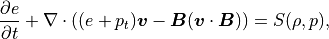
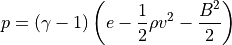
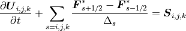
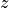
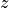

CANS+ 3次元コード¶
基礎方程式¶
CANS+は以下のような規格化されたMHD方程式を解いています。
質量保存の式：
(1)¶
運動量保存の式：
(2)¶
誘導方程式：
(3)¶
エネルギー保存の式：
(4)¶
補正用のスカラポテンシャル：
(5)¶
ここで、  は単位行列、 は
は単位行列、 は
(6)¶
で定義される、全圧力（プラズマ圧力＋磁気圧力）を表し、プラズマ圧は
(7)¶
より求められます（ここで  は比熱比）。
は比熱比）。
式 (4) の右辺はソース項となっており、課題によって冷却や加熱効果として（陽に）含まれます。また、低圧力領域への安定化としても（陰に）導入されています。従って、 厳密なエネルギー保存は数値的安定化のため成り立っていません 。
また、式 (4) に含まれる  は
は
(8)¶
からの誤差をなるべく小さいまま解き進めるために導入されたスカラ変数で、式 (5) に従って解き進められます。式 (1) - (5) をGLM-MHD方程式系と呼びます（詳細は前章 移流拡散法 、 Dedner et al., 2002 ）。
保存系で書かれたGLM-MHD方程式系はシステム方程式
(9)¶
にまとめて、
(10)¶
のように、有限体積法として解きます。ここで、  は各次元方向（ ）のセル幅、 はセル境界における数値フラックスを表します。数値フラックスを、
は各次元方向（ ）のセル幅、 はセル境界における数値フラックスを表します。数値フラックスを、
5次精度のMP5法によるセル境界への変数補間（ 前章MP5 , Suresh and Huynh, 1997 ）
HLLD（HLL)近似リーマン解法（ 前章HLLD , Miyoshi and Kusano, 2005 ）
によって求めることにより、 CANS+ は空間（5次）精度・安定性を確保したコードとなっています。ソース項も含めて、時間更新は3次精度のTVDルンゲ・クッタ法（ Gottlieb and Shu, 1998 ）を採用しています。
パッケージ構成¶
以下のような構成になっています。
Makefileはコードのバイナリ生成、削除をコントロールしています。初期化するには$CANSPLUS_DIR/3d内で、
$ make clean
としてください。Makefile_incには、
FC = mpif90
FFLAGS = -O2
のように、makeする際のコンパイラとコンパイラオプションの環境変数が設定されています。ここでは、"$FC"にはMPI版Fortranコンパイラのコマンド名、"$FFLAGS"にはコンパイラオプションが設定されています。コンパイラとコンパイラオプションを変更したい場合は、例えばとあるスパコン上では、
FC = mpifrt
FFLAGS = -Kfast
のように修正してください（インテルコンパイラがない場合）。
"common"には共通するMHD方程式数値解法のエンジン部分、"idl"にはポスト処理用として IDLルーチン が用意されています。
物理課題として「衝撃波管問題 (md_shktb)」、「Orsarg-Tang渦問題（md_OTvortex）」、「ケルビン・ヘルムホルツ不安定（md_kh）」、「磁気リコネクション（md_mrx）」、「パーカー不安定 (md_paker）」、「ジェット伝搬（直交格子） (md_jet_car）」、「ジェット伝搬（円筒座標系）( md_jet）」、「降着円盤での磁気回転不安定（gMRI)」が用意されています（2018年8月現在）。
各課題には、

が主に含まれており、それぞれの課題に沿った初期設定のサンプルが置かれています。"data/"はデフォルトの計算結果の出力先です。
例えば、衝撃波管問題の計算を行うには、
$ cd $CANSPLUS_DIR/3d/md_shktb
$ make
$ mpiexec -n 1 ./a.out
とします。結果はDAC形式と呼ばれるオリジナル CANS で使われていたバイナリデータ形式で、"data/"内に出力されます。
パラメタ設定¶
各課題において、ユーザーが編集する必要があるのは（基本的に）
const.f90
model.f90
のみです。以下では、ケルビン・ヘルムホルツ不安定の課題ディレクトリ（md_kh/）を例にとって見ていきます。
各課題に含まれる"const.f90"では、シミュレーションを行うのに必要な定数が設定されています。
const.f90:
module const
implicit none
! physical constants
real(8),parameter :: pi = acos(-1.0d0), pi2 = 2d0*pi
real(8),parameter :: gm = 5d0/3d0 ! specific heat retio
! time control parameters
logical,parameter :: restart = .false. ! if .true. then start from restart data
integer,parameter :: nstop = 100000
real(8),parameter :: tend = 200.0d0, dtout = 4
real(8),parameter :: safety = 0.3d0 ! CFL number
real(8),parameter :: dtmin = 1d-10! minimum time step
! Output DIRs
character(*),parameter :: input_dir = "./data/", output_dir = "./data/"
! Cell & MPI
integer,parameter :: margin = 3 ! for 5th order interpolation
integer,parameter :: ix = 90+2*margin,jx=64+2*margin,kx=1+2*margin
integer,parameter :: mpisize_x = 2, mpisize_y = 5,mpisize_z = 1
integer,parameter :: igx = ix*mpisize_x-2*margin*(mpisize_x-1)
integer,parameter :: jgx = jx*mpisize_y-2*margin*(mpisize_y-1)
integer,parameter :: kgx = kx*mpisize_z-2*margin*(mpisize_z-1)
real(8),parameter :: xmin = 0.d0, ymin = -10.d0, zmin =0.d0
real(8),parameter :: xmax = 2.d0*pi/0.56d0, ymax = +10.d0, zmax = 1.d0
real(8),parameter :: dxg0 = (xmax-xmin)/real(igx-margin*2)
real(8),parameter :: dyg0 = (ymax-ymin)/real(jgx-margin*2)
real(8),parameter :: dzg0 = (zmax-zmin)/real(kgx-margin*2)
!TRUE if periodic boundary condition is applied. (1:x, 2:y, 3:z)
logical,parameter :: pbcheck(3) = (/.true., .false., .true./)
! Parameters for the Kelvin-Helmholtz instability
real(8),parameter :: ro0 = 1.d0 !at Y=ymax
real(8),parameter :: b0 = 1.d0 !at Y=ymax
real(8),parameter :: beta = 1.d0 !at Y=ymax, Pressure in B0^2/4pi = beta/2
real(8),parameter :: v0 = sqrt(1.d0+0.5*gm*beta) !Velocity difference in VA0
real(8),parameter :: rr = 0.1d0 !rho ratio (ro(y=ymin)/ro(y=ymax))
real(8),parameter :: br = 1.d0 !field strength ratio
real(8),parameter :: theta = pi/2. !field elevation angle
real(8),parameter :: lmd = 1.d0 !velocity shear width
end module const
まずは定数。
- pi, pi2
定数
 ,
, 
- gm
比熱比
計算時間に関する制御変数の設定を行います。
- restart
直前の途中結果からリスタートするかどうか（.true. / .false.）を決める変数です。"restart=.true."の場合、"data/"内にある"readFileNumber.dat"というファイルに記載された番号の出力データから計算を再開します。
- nstop
最大時間ステップ数。
- tend, dtout
シミュレーションの終了時刻、データ出力時間間隔です。
- safety
クーラン数。ここで定めたCFL条件を満たすように、系の発展と共に時間刻み幅を修正しています。
ご用心
が安定条件です（cf. Suresh and Huynh, 1997 ）。
- dtmin
最小時間ステップ刻み幅です。これを下回ると、終了します。
- input_dir, output_dir
データの入出力先です。
次に、主にセル数、MPIのパラメタ設定を行います。
- margin
境界のマージン用のセル数で、5次精度の多項式補間法を使っているので、3点必要になります。
- ix, jx, kx
各プロセスが担当するセル数です。本課題設定では2次元計算を想定しているので、z方向のセル数を1（マージンを含めると7）としています。1次元テストを行う際には同様にy方向のセル数を1としてください。
- mpisize_x, mpisize_y, mpisize_z
各次元方向の領域分割数です。全プロセス数はこの3つを掛けあわせた数となります。
ご用心
円筒座標系（  ,
,  ,  ）の場合、 方向のプロセス数（mpisize_y）は、並列化の制約から、偶数である必要があります。
,  ）の場合、 方向のプロセス数（mpisize_y）は、並列化の制約から、偶数である必要があります。
- igx, jgx, kgx
全シミュレーション空間のセル数となります。
- xmin, xmax, ...
シミュレーション空間の各方向のサイズを表します。
- dxg0, dyg0, dzg0
基本となるセル幅となります。一様セル幅ではこの値が使われます。
- pbcheck
各次元方向の境界条件を判定し、周期境界条件の場合は".true."、それ以外の場合は".false."としてください。
以上が各課題に共通の初期設定・パラメタとなります。
最後に、各課題固有のパラメタが（必要な場合）設定されています。"model.f90"を参照の上、パラメタを設定してください。また、モデルの初期プロファイルを変更したい場合も、"model.f90"を編集します。
領域分割法による並列化¶
{kind=link}
3次元コードにおける領域分割法と各プロセスが担当する領域¶
CANS+ は、 領域分割法と各プロセスが担当する領域図 のように、各次元方向に領域を区分化し、各領域の発展を各プロセス（Rank）が分担することにより、並列化を行っています。図例では、  ,
,  , （ , , ）方向にそれぞれ、 分割し、計12並列計算の場合を表しています。各ノードが担当するセル数を"ix", "jx", "kx"で設定し、シミュレーション領域全体を"igx", "jgx", "kgx"で表します。これらパラメタの設定は パラメタ設定 を参照ください。
, （ , , ）方向にそれぞれ、 分割し、計12並列計算の場合を表しています。各ノードが担当するセル数を"ix", "jx", "kx"で設定し、シミュレーション領域全体を"igx", "jgx", "kgx"で表します。これらパラメタの設定は パラメタ設定 を参照ください。